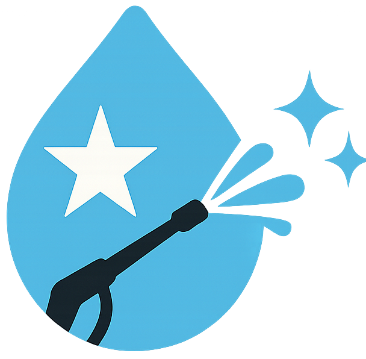

Potomac Valet Trash
Potomac Valet Trash

Cleaner Communities. Less Work for Your Team.
Potomac Valet Trash partners with apartment communities to provide reliable doorstep trash pickup on scheduled nights. We help reduce loose trash, improve curb appeal, and take nightly trash runs off your maintenance team’s plate.
Our focus is simple: consistent service, clear communication, and professional standards property managers can depend on.
What We Deliver
- Scheduled doorstep pickup (Monday–Friday)
- Bagged household trash to on-site dumpsters only
- Clear resident rules + missed-pickup standards
Want pricing for your property?
Get a Free Quote